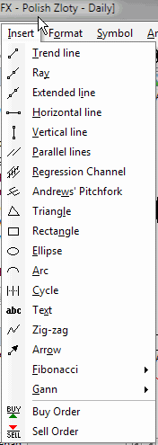
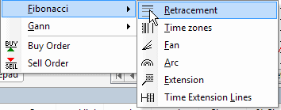

Trend line
Draws a trend line.
To draw a trend line on the chart, start drawing by pointing the mouse and pressing the left mouse button where you want to start the drawing. Then move the mouse and a tracking line will appear. Release the left mouse button when you want to finish drawing. Alternatively, you can click once in the place where you want the trend line to begin, move the mouse, and click once again to finish drawing. You can also cancel drawing by pressing the ESC (escape) key.
Ray
Draws a ray. A ray is a right-extended trend line.
Extended line
Draws an extended line. An extended line is a trend line that is extended automatically from both the left and right sides.
Horizontal line
Draws a horizontal line. A horizontal line is self-expanding, so it is only necessary to click on the chosen price level.
Vertical line
Draws a vertical line. A vertical line is self-expanding, so it is only necessary to click on the chosen bar.
Parallel lines
Draws parallel trend lines.
This tool allows you to draw a series of parallel trend lines. First, you draw a trend line as usual; then, a second line parallel to the first is automatically created, and you can move it around with the mouse. Once you click on the chart, it is placed in the given position. Then another parallel line appears that can be placed somewhere else. And again, and again. To stop this, please either press the ESC key or choose the "Select" tool.
Regression channel
Draws Raff, standard deviation, and standard error channels. To read the detailed information regarding this tool, please read the Drawing
tools reference chapter.
Andrews' pitchfork
Draws an Andrews' pitchfork. Read the Drawing tools reference chapter for more detailed information.
Triangle
Draws a triangle. Left-click on the first point, move to the second point, then click once; then move to the third point and click once again.
Rectangle
Draws a rectangle. Left-click on the first point, move to the position where you want to place the opposite corner and click once again.
Ellipse
Draws an ellipse. An ellipse is connected to the date/price coordinates (as trend lines) rather than to the screen pixels, so it can change its visual shape when displayed at various zoom factors or screen sizes. To see the properties of an ellipse, you should double-click on the clock-like 3, 6, 9, or 12 o'clock positions.
Arc
Draws an arc. An arc, the same as an ellipse, is connected to the date/price coordinates (as trend lines) rather than to the screen pixels, so it can change its visual shape when displayed at various zoom factors or screen sizes. To see the properties of an ellipse, you should double-click on the clock-like 3, 6, 9, or 12 o'clock positions.
Cycle
Draws time cycles. To use the time cycles tool, click on the cycles drawing tool button in the toolbar, then click at the starting point of the cycle and drag to the end point of the cycle. These two control points control the interval between the cycle lines. When you release the mouse button, you will get a series of parallel lines with equal intervals between them.
Text
Allows you to place custom text on the chart. Left-click on the chart to start typing. To finish, click once again on the chart, outside the text box. You can also cancel typing by pressing the ESC (escape) key.
Zig-zag
Draws a series of connected trend lines. To finish the series, double-click or press the ESC (escape) key.
Arrow
Draws a line that ends with an arrow. The drawing technique is exactly the same as drawing a trend line.
Fibonacci
A group of Fibonacci drawing tools. Read the Drawing tools reference chapter for more detailed information.

Gann
A group of Gann drawing tools.